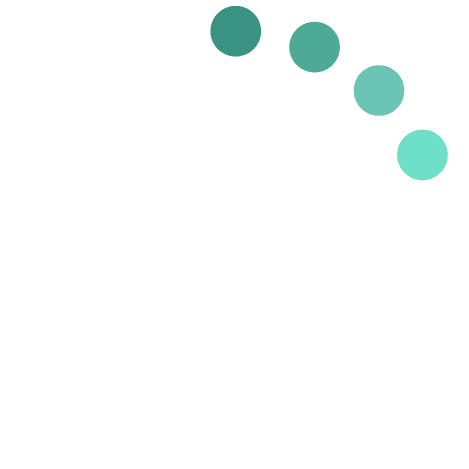

<div class="container-fluid" id="content" *ngIf="subjectTerm">
  <div
    class="row justify-content-between align-items-center p-2"
    *ngFor="let subject of subjectTerm"
  >
    <div class="col-8 p-0">
      <span>Subject Term: {{ subject._id }}</span>
      <table cellpadding = "10">
        <tr>
          <td white-space: nowrap>
            <span>Associated Letters:</span>
          </td>
          <td *ngFor="let id of (subject.xml_ids ? subject.xml_ids.slice(0,5): [])" white-space: nowrap>
            <a (click)="letterLink(id)">{{ id }}</a>
          </td>
          <td *ngIf="subject.xml_ids.length > 5" white-space: nowrap style="color: #c17953;">
            <a>View Additional Letters</a>
          </td>
        </tr>
      </table>
    </div>
  </div>
</div>
<ng-template #loading>
  <div class="container-fluid">
    <div class="row align-items-center justify-content-center">
      
    </div>
  </div>
</ng-template>